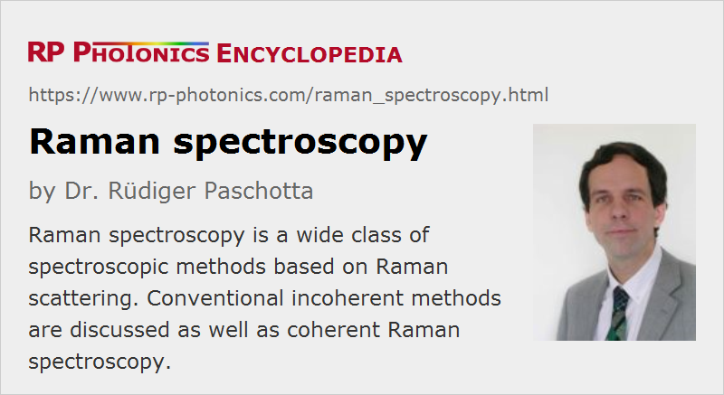

Raman Spectroscopy
Definition: optical spectroscopy based on spontaneous or stimulated Raman scattering
More general terms: optical spectroscopy
German: Raman-Spektroskopie
How to cite the article; suggest additional literature
Author: Dr. Rüdiger Paschotta
Raman spectroscopy is a wide class of methods of spectroscopy which are based on either spontaneous or stimulated Raman scattering, a kind of inelastic light scattering. It is named after Sir Chandrashekhara Venkata Raman, who first experimentally demonstrated Raman scattering.
Raman spectroscopy is used for many different purposes (see below the section on applications), and variants of it depend on different operation principles. They also involve quite different instrumentation, e.g. concerning the types of lasers used.
Spontaneous Raman Scattering
Operation Principle
In most cases, spontaneous Raman scattering induced by a single light source is utilized. The sample under investigation is irradiated with an intense light beam (usually a continuous-wave laser beam) with a sufficiently narrow optical bandwidth. Scattered light is generated mainly by Rayleigh scattering, but to a smaller part also by Raman scattering. While Rayleigh scattering leads to light with unchanged optical frequency (except for a possible Doppler effect, which is usually quite weak), Raman scattering produces scattered components with substantially modified optical frequencies and wavelengths. Those frequency-shifted components must be analyzed with a suitable kind of Raman spectrometer.
The mentioned change of optical frequency arises from inelastic interactions of light with the investigated medium. For example, the laser light may hit a molecule in a gas which is initially in its ground state. When spontaneous Raman scattering occurs, the molecule is excited to a higher vibrational/rotational state, and the energy of the scattered photon is lowered by that excitation energy. It may also happen that a molecule is initially in an excited state and is deexcited by the laser beam, leading to an anti-Stokes shift, i.e., to an increased optical frequency of the scattered light. By measuring the optical spectrum of the scattered light, one can therefore acquire information on the excitation states of materials in the investigated sample. There are often clearly defined “Raman lines” inside spectra, corresponding e.g. to the energies of certain vibration modes of the material. Patterns of such lines often form clear “spectroscopic fingerprints” for certain substances.
The used Raman spectrometer may be based on a tunable monochromator combined with a sensitive photodetector. Faster data acquisition is possible with other types of spectrometers, e.g. containing photodetector arrays, or based on Fourier transform spectroscopy.
Typically studied excitations are molecular vibrations or lattice phonons with frequencies of the order of 1 THz to 100 THz. The used optical frequencies are in most cases substantially higher (hundreds of THz).
The obtained Raman spectra are usually not shown with absolute optical frequencies on the horizontal axis, but rather with differences of wavenumber (understood as inverse wavelength) in units of cm−1. Those differences are proportional to the difference in optical frequency or photon energy. For example, a difference of 1 cm−1 corresponds to a frequency difference of ≈30 GHz.
Vibration modes of molecules are often dominantly associated with vibrations of certain chemical bonds, and then have vibration frequencies which are characteristic for those bonds. For example, C-H bonds typically correspond to waive numbers around 2800 to 3200 cm−1, while C-O double bonds are at roughly 1700 cm−1. Phonon spectra of solids (see e.g. Figure 1) exhibit much broader features due to the huge number of different phonon modes.
Raman spectra may show regions with positive and negative changes of photon energy, i.e., contributions from Stokes and anti-Stokes lines. In other cases, only the Stokes region is shown.
Comparison with Absorption Spectroscopy
Excitation states of substances can also be studied with laser absorption spectroscopy. Compared with that, Raman spectroscopy is different in some respects:
The used photon energy is typically far higher than the energy related to the studied excitations. It is usually not tuned to an electronic transition of the medium (except in matters of resonant Raman spectroscopy), so that the probe light does not experience substantial absorption, and little fluorescence is induced. (Illustrations of the effect often involve certain “virtual energy states”, which however are not real excitation states of investigated substances, but only imagined states.)
As a consequence, one can usually use a laser source with a constant optical frequency rather than a tunable laser. Typically, one uses laser light in the visible or ultraviolet spectral region, or in the infrared. For absorption spectroscopy to work on similar excitation features, one would typically need a tunable mid-infrared laser source. Also, a kind of photodetector can be used for Raman spectroscopy which operates with much shorter wavelengths; this is advantageous because long-wavelength infrared detectors tend to offer a quite limited signal-to-noise ratio and/or require cryogenic operation. It can also be advantageous that the used light can be easily transmitted e.g. through glass cuvettes, while infrared absorption spectroscopy requires more special optical windows.
Further, e.g. in the context of biological and medical studies Raman spectroscopy it is advantageous that water hardly affects the measurements. It exhibits only weak Raman scattering, while, infrared absorption spectroscopy can be heavily affected by absorption of infrared light in water.
Strength of Raman Lines
Note that the strength of a Raman line does not only depend on the concentration of a certain substance in the sample, but also on the strength of coupling of the mentioned mode with the light field. Essentially, that coupling is related to changes of polarizability e.g. of a molecule. The resulting selection rules can result in substantially different line strengths for Raman scattering, compared with infrared absorption: excitations which are hardly visible in laser absorption spectroscopy may produce intense Raman lines, while prominent lines in absorption spectra may correspond to only weak or even completely missing Raman lines. (Certain vibrational transitions are not Raman active.) In that sense, information obtained with both spectroscopic techniques can be regarded as complementary.
Suppressing Light from Rayleigh Scattering
Spontaneous Raman scattering is a relatively weak process; for example, only one out of a million photons sent to a sample may be scattered that way, and only a small fraction of the scattered photons will typically get to the detector, because we have omnidirectional scattering. Typically, much more light is scattered via Rayleigh scattering (elastic scattering, without change of optical frequency). Therefore, a substantial technical challenge is to suppress the disturbing effect of the far stronger Rayleigh-scattered light. In an ordinary spectrometer, Rayleigh-scattered light may not be sufficiently suppressed e.g. due to light scattering within the spectrometer setup. Therefore, one often uses an additional optical filter (e.g. a notch filter) for strongly attenuating Rayleigh-scattered light before entering the spectrometer.
Influences on Raman Lines
The height of a recorded Raman line obviously depends on the concentration of the corresponding substance. Furthermore, its precise horizontal position (frequency shift) may be modified by certain influences on the substance, e.g. mechanical stress. Also, it is possible that a Raman line is broadened due to inhomogeneities, leading to slightly different peak positions for different molecules. Besides, the heights of Raman lines can be temperature-dependent. Various applications (see below) utilize such influences on Raman lines for measuring certain quantities.
Lasers for Spontaneous Raman Scattering
In the early days of Raman spectroscopy, it was difficult to generate sufficiently intense quasi-monochromatic light without having lasers. Since the introduction of lasers in the 1960s, lasers are essentially always used as light sources for Raman spectroscopy.
For studying inorganic samples, one will usually prefer to use a laser source with a relatively short wavelength, since Raman scattering (in this sense similar to Rayleigh scattering) becomes much stronger at short optical wavelengths. One may, for example, use some kind of green laser or even an ultraviolet laser (or frequency-doubled laser).
However, biological samples would often rapidly be damaged under the influence of ultraviolet or even intense visible light. Therefore, lasers with longer wavelengths need to be used in such cases – e.g. light at 1064 nm from a YAG laser.
In any case, the linewidth of the laser source should be well below the linewidth of the expected Raman lines. It is often necessary to use a narrow-linewidth laser, perhaps even a single-frequency laser, for investigating e.g. molecular gases or liquids containing many different substances (e.g. petroleum).
Refinements and Other Operation Principles of Raman Spectroscopy
Polarized Raman Spectroscopy
Usually, the light of the probe laser is linearly polarized. One can retrieve additional information on a sample by acquiring optical spectra of Raman-scattered light both for the polarization direction of the laser beam and for the orthogonal direction. Molecules with isotropic polarizability produced polarized scattered light, while others cause a partial depolarization.
There are also techniques for measuring Raman optical activity, involving circularly polarized light.
Surface-enhanced Raman Spectroscopy (SERS)
Dramatic enhancements of Raman signals are possible by adding a silver or gold colloid (containing nanoparticles) to a sample. The laser light then excites surface plasmons on the nanoparticles, and those can have substantially enhanced field intensities in their immediate neighborhood, where the molecules of interest may then interact with the light.
Tip-enhanced Raman Spectroscopy (TERS)
This method is somewhat similar to surface-enhanced Raman spectroscopy. Instead of nanoparticles, while uses a very sharp tip, which also exhibits strong local enhancements of the light field. The obtained Raman signal may be largely coming from a very small volume with a diameter of a few tens of nanometers around the tip. This is obviously attractive for realizing a type of Raman microscopy with very high (sub-wavelength) spatial resolution.
Resonance Raman Spectroscopy
While Raman spectroscopy is usually performed with probe light at frequencies far from electronic resonances, there are techniques of resonant Raman spectroscopy where the probe light is tuned close to such electronic resonances. That can lead to substantial increases in signal intensity. Furthermore, since the change in electron density caused by an electronic excitation can be more or less confined to a part of a larger molecule, such increases may be much stronger for certain molecular vibrations than for others. This may provide further valuable spectroscopic information.
Resonance Raman spectroscopy is mainly applied to large biomolecules containing chromophores. The method can also be combined with service-enhanced Raman spectroscopy (see above).
Stimulated Raman Spectroscopy
While spontaneous Raman scattering is used in most cases, there are methods of stimulated Raman spectroscopy where one obtains stronger signals by using two different laser sources. For example, one can be a fixed-frequency high-power pump laser, while the other one (the probe laser) is a tunable laser with lower power, the wavelength of which can be tuned around that of the pump beam. One detects changes of the transmitted power of the probe beam. Note that the scattering is not only stronger with such a technique, but also obtained in the form of a directed beam, which is much easier to detect than light scattered in all directions.
Such methods of coherent Raman spectroscopy typically have much higher sensitivities, but the required instrumentation (including a tunable laser) is more complex.
Coherent Anti-Stokes Raman Spectroscopy
Coherent anti-Stokes Raman spectroscopy (CARS) is another type of coherent Raman spectroscopy. It employs a third-order nonlinear optical process which involves three different laser beams: a pulsed pump beam, a pulsed Stokes beam at a variable and somewhat lower frequency, and a probe beam at another fixed (higher) frequency. The interaction of those beams with the sample produces light at the anti-Stokes frequency (i.e., higher than the probe frequency). The signal is resonantly enhanced when the frequency difference between the pump and Stokes beams matches the frequency of a Raman line.
An important aspect is that contributions from different molecules to the CARS signal can coherently add up along the path of the probe beam, and that results in the fact that the signal power is proportional to the square of the path length and the concentration. The resulting directed signal beam is easier to detect than light from omnidirectional incoherent scattering. However, the demands on the used lasers are of course far higher than for ordinary incoherent Raman spectroscopy.
Hyper Raman scattering
Hyper Raman scattering means that the scattered light occurs at frequencies somewhat lower than twice the frequency of the pump light. This means that two pump photons are converted into one photon of Raman-scattered light and one phonon (or other excitation quantum). This effect is usually fairly weak, but it has aspects which make it interesting for Raman spectroscopy. In particular, hyper-Raman spectra can provide information on otherwise non Raman-active modes.
Raman Microscopy
Raman spectroscopy can also be combined with microscopy. The result may be called Raman microspectroscopy.
For example, one may use a scanning laser microscope, where a tight laser focus is scanned through a certain volume of a sample, and Raman-shifted light sent back towards the laser is analyzed. Using the principle of confocal microscopy, one can achieve a particularly high spatial resolution, often somewhat below 1 μm. For each position, one can acquire a full Raman spectrum (hyperspectral Raman imaging) rather than only an intensity value.
Another technique – tip-enhanced Raman spectroscopy (TERS) – has already been mentioned above.
Applications of Raman Spectroscopy
There is a very wide field of applications of Raman spectroscopy. Some examples are:
- scientific research in biology and medicine
- monitoring of pharmaceuticals
- non-destructive identification of substances and chemical compositions, e.g. in industry and for the analysis of historic artworks
- identification of polymorphism of substances
- tracking changes of substances in certain process, e.g. polymerization or thermal degradation
- detection of explosives
- measuring tensile and compressive strain via shifts of Raman lines
- temperature measurements, e.g. distributed temperature sensing in optical fibers
Suppliers
The RP Photonics Buyer's Guide contains 47 suppliers for Raman spectroscopy equipment. Among them:
Questions and Comments from Users
Here you can submit questions and comments. As far as they get accepted by the author, they will appear above this paragraph together with the author’s answer. The author will decide on acceptance based on certain criteria. Essentially, the issue must be of sufficiently broad interest.
Please do not enter personal data here; we would otherwise delete it soon. (See also our privacy declaration.) If you wish to receive personal feedback or consultancy from the author, please contact him e.g. via e-mail.
By submitting the information, you give your consent to the potential publication of your inputs on our website according to our rules. (If you later retract your consent, we will delete those inputs.) As your inputs are first reviewed by the author, they may be published with some delay.
Bibliography
| [1] | P. J. Hendra and P. M. Stratton, “Laser-Raman spectroscopy”, Chem. Rev. 69 (3), 325 (1969), doi:10.1021/cr60259a003 |
| [2] | D. Hollenbeck and C. D. Cantrell, “Multiple-vibrational-mode model for fiber-optic Raman gain spectrum and response function”, J. Opt. Soc. Am. B 19 (12), 2886 (2002), doi:10.1364/JOSAB.19.002886 |
| [3] | C. L. Haynes et al., “Surface-enhanced Raman spectroscopy”, Anal. Chem. 77 (17), 338 (2005), doi:10.1021/ac053456d |
| [4] | S. Laing et al., “Surface-enhanced Raman spectroscopy for in vivo biosensing”, Nature Rev. Chem. 1, 0060 (2017), doi:10.1038/s41570-017-0060 |
| [5] | Journal of Raman Spectroscopy by Wiley |
See also: laser spectroscopy, Raman scattering
and other articles in the category methods
|  |
If you like this page, please share the link with your friends and colleagues, e.g. via social media:
These sharing buttons are implemented in a privacy-friendly way!